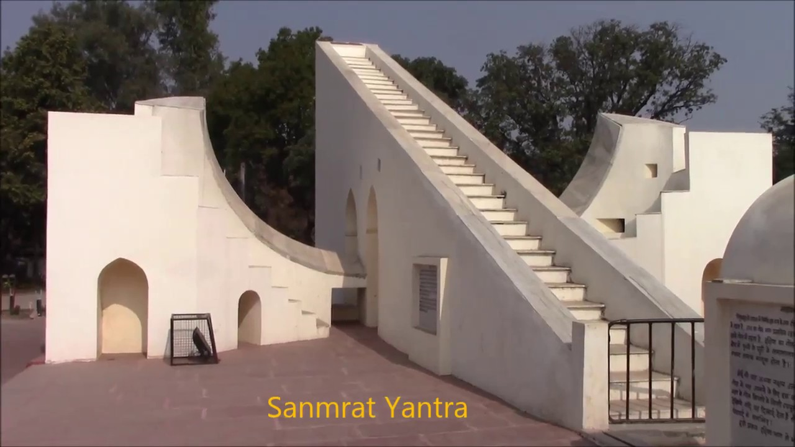

ज्योतिष शास्त्र के दृष्णिकोण से यह स्थान अत्यंत महत्वपूर्ण है।
इस वेधशाला का निर्माण सन् 1730 में राजा जयसिंह ने करवाया था।

सन् 1923 में महाराजा माधवराव सिंधिया ने इसका जीर्णोद्धार करवाया।
सम्राट यंत्र, रिगंश यंत्र, नाड़ी वलय यंत्र तथा भित्ति यंत्र आदि यहां के प्रमुख यंत्र हैं।
खगोल अध्ययन के लिए यह स्थान अत्यंत उपयोगी है।